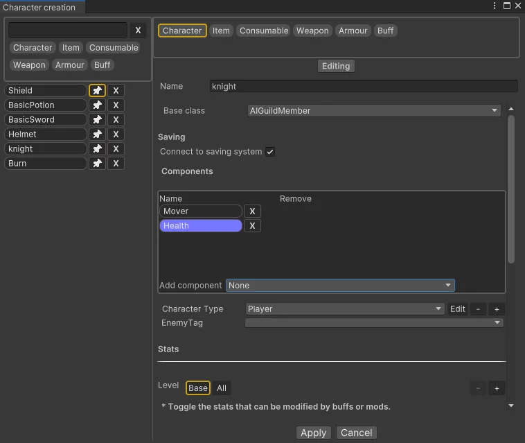
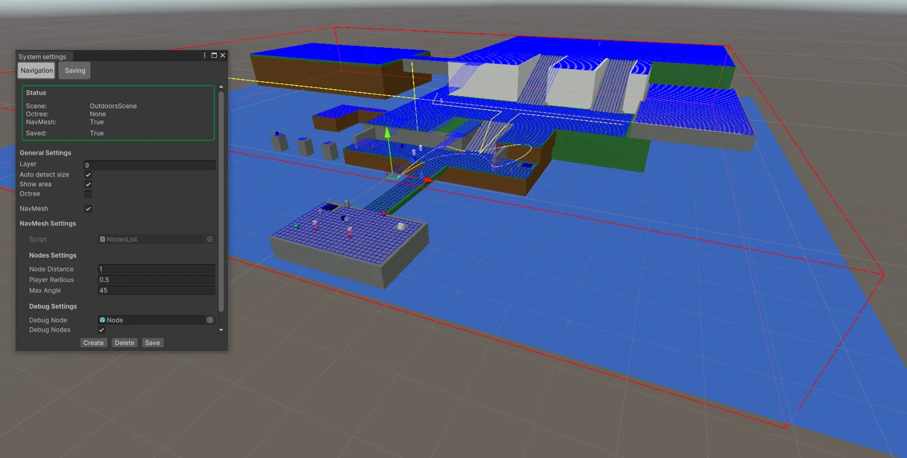
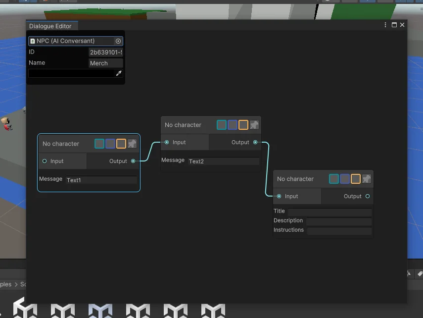

Descripción
Herramienta diseñada para agilizar la creación de un juego tipo RPG en Unity. Incluye una arquitectura básica extensible para el juego y herramientas de editor para configurar personajes, estadísticas y más.
Estado actual
En desarrollo
Sistemas incluidos
Sistemas de gameplay, editores personalizados, navegación, diálogos, misiones, inventario y guardado.
Funcionamiento
Malla
Se utilizan varios raycast para detectar los objetos en el área de acuerdo a las dimensiones del jugador, el ángulo de inclinación de las superficies y la densidad de esta. Los resultados se guardan en un archivo de texto en StreamingAssets para incluir en la build del proyecto.
Imágenes del proyecto
Selecciona una captura para verla en su resolución original.





